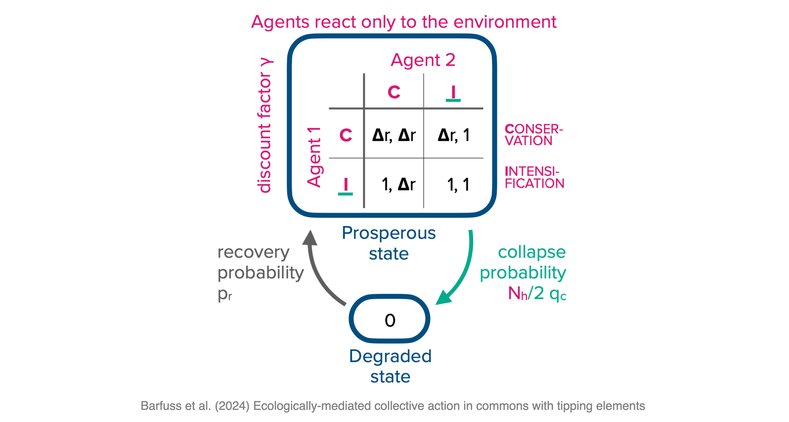

import sympy as sp
import numpy as np
import matplotlib.pyplot as pltEx | Dynamic Interactions
In the chapter on dynamic interactions, we saw how being embedded in the same environment could resolve the tragedy into a comedy of the commons. In this exercise, you will investigate the ecological micro-foundations of social dilemma traps. That is when there is no game to begin with in the short term; what kind of incentive regimes can emerge when the agents are embedded in the same environment? The model is very similar to the one presented in the chapter, and a detailed analysis can be found in (Barfuss et al., 2024).

Model description
Two representative decision-makers repeatedly interact (in discrete time) within an environment of two states, a prosperous and a degraded one. In the prosperous state, each agent can choose between a conservation and an intensification action, which affects the environment. For example, intensification corresponds to emitting a large, business-as-usual amount of carbon into the atmosphere, a high rate of rainforest deforestation, or a high level of freshwater extraction. In contrast, conservation corresponds to a significantly reduced amount of greenhouse gas emissions, rate of deforestation, or level of fresh-water extraction within the recovery capacity of the environment.
Provisioning goods and immediate benefits. In a prosperous environment, the biosphere’s maintenance and regulating services function sufficiently well, and the environment can deliver provisioning goods to the agents. We assume these goods are entirely private, i.e., their benefits do not depend on the other agent’s action. Each agent opting for conservation receives a benefit \(b_\textsf{C}\). Each agent opting for intensification receives a higher benefit \(b_\textsf{I} > b_\textsf{C}.\) In the degraded state, however, the biosphere’s maintenance and regulating services are not functioning. Thus, whenever the environment collapses into or is in the degraded state, all agents receive only a benefit \(b_\textsf{D} < b_\textsf{C}\) independent of their action.
To reduce the number of free model parameters, we summarize these three benefits into a single relative benefit ratio, \(\Delta r = f(b_\textsf{C}) \in [0, 1]\) by transforming all benefit parameters according to \(f(x) =(x - b_\textsf{D}) / (b_\textsf{I} - b_\textsf{D})\). \(\Delta r\) describes how much less immediate benefit conservation delivers (in relation to the collapse impact \(b_\textsf{D}\)) compared to intensification. Thus, a larger \(\Delta r\) denotes either a larger conservation benefit, a smaller, more severe degradation benefit, or a smaller intensification benefit.
Ecological tipping and transitions. However, each agent employing intensification also increases the probability of triggering the tipping element and collapsing the environment into the degraded state. We parameterize the overall collapse probability \(p_c\) by the collapse leverage \(q_c \in [0,1)\) each intensification actor exerts on the environment. The total collapse probability \(p_c=0\), if no actor chooses intensification, \(p_c=q_c/2\) if one actor chooses intensification, and \(p_c=q_c\) if both do. In the degraded state, the agents cannot influence the environment and have to wait on average for \(1/p_r\) rounds, parameterized by the recovery probability \(p_r\), until they enter the prosperous state again.
Decision model. We assume that each agent’s conservation or intensification strategy is conditional solely on the current environmental state. They do not take longer histories, their own past choices, nor the choices of the other agent into account - either because they do not have the cognitive resources for more complex strategies or because they cannot observe or make sense of the other agent’s actions. But we assume that agents can plan their course of action into the future and that they care for future rewards but exponentially discount them with their discount factor \(\gamma \in [0, 1)\).
Note that all direct social interaction in the model is deliberately stripped away. The agents’ choices do not influence the immediate benefit of the other agent. Agents are self-interested and do not consider the other agent’s actions for their strategy. Social interaction is only mediated indirectly through the environment. This is not to say that such direct social interaction does not exist.
Our model aims to isolate the cooperation-promoting effects of the actors’ shared ecological embeddedness. There is already good evidence for the beneficial effect of direct social interaction on collective action (Nowak, 2006; Ostrom, 1990). We aim to assess the prospects for collective cooperation when such mechanisms cannot work, either because of the anonymity or the scale of the problem.
In summary, our theoretical model is determined by only four parameters, two ecological and two social ones: the collapse leverage \(q_c\), the recover probability \(p_r\), the discount factor \(\gamma\), and the relative benefit ratio \(\Delta r\). All of them are in the range between 0 and 1.
Task
Visualize the critical curves where the social dilemma incentive regimes change - solving for the discount factor \(\gamma\) as a function of the collapse leverage \(q_c\) (assuming agents with identical parameters). The other two parameters are \(\Delta r = 0.5\) and \(p_r = 0.1\). Briefly interpret your plot.
# ...